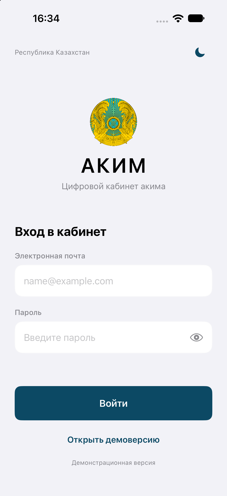
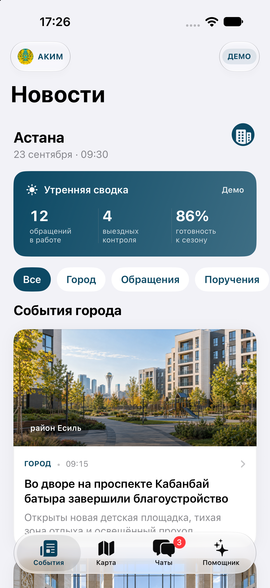

Аким
Наблюдает за городскими событиями, картой и рабочими чатами. Контроль и черновики остаются внутри демонстрационной сессии.
- Нажать «Открыть демоверсию».
- Во вкладке «События» открыть карточку и выбрать «Взять на контроль».
- Во вкладке «Помощник» открыть «Проект поручения» и нажать «Сохранить черновик».

